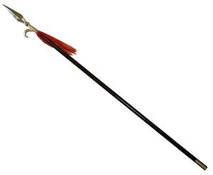
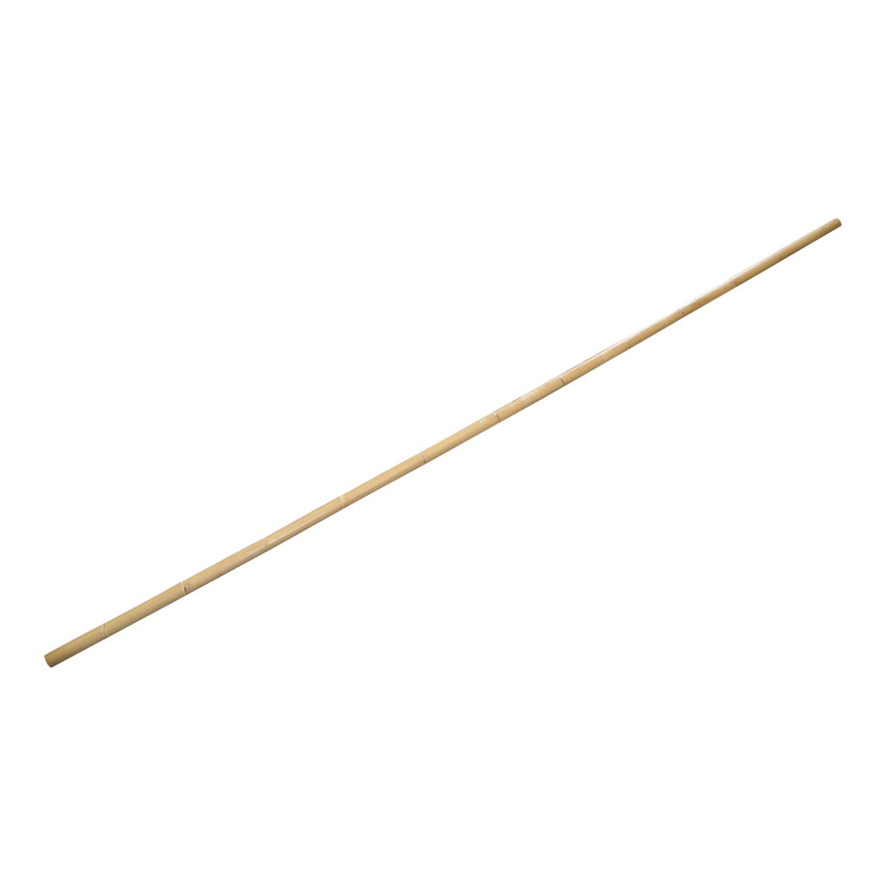
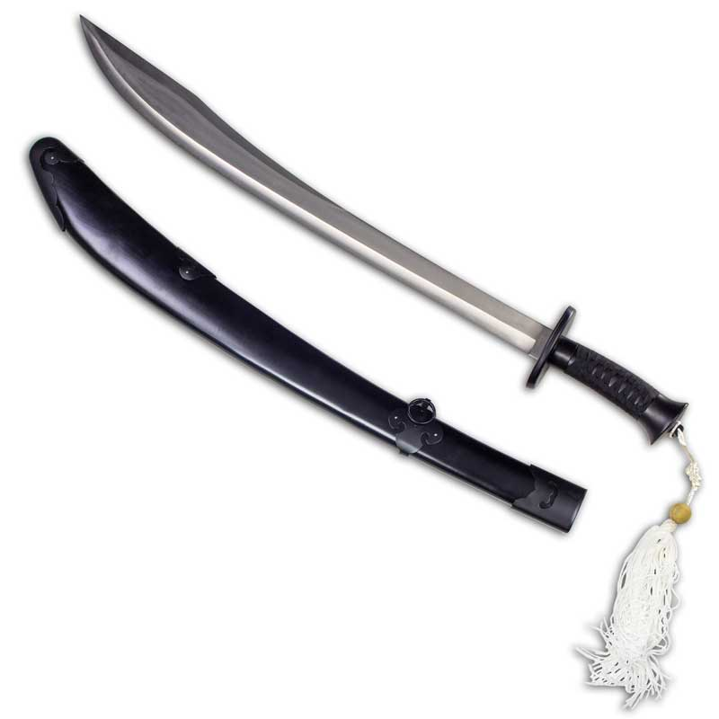
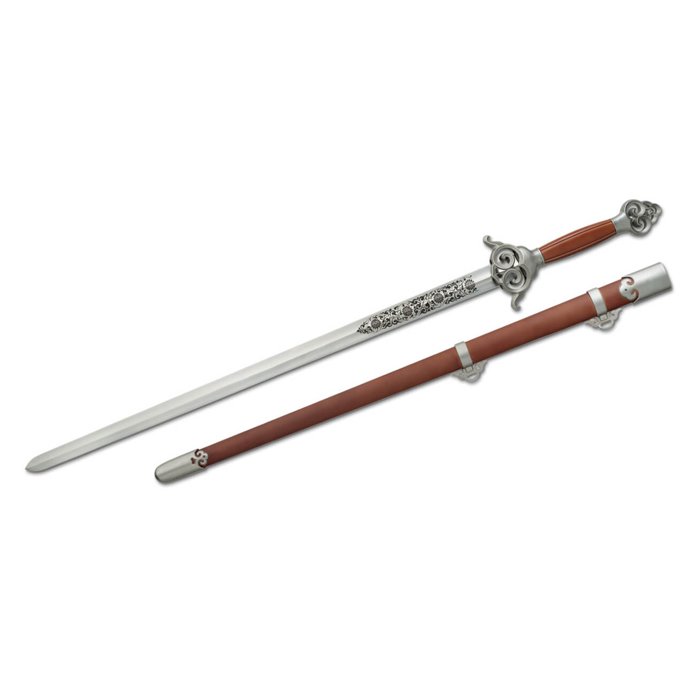

Também chamada “rei das armas”, normalmente é feita de ligustro, uma árvore chinesa.
Tem uma ponta de metal e um adereço de pelo de cavalo. O comprimento costuma ser igual
à altura do lançador com a mão levantada, mas há modelos de até 3,6 m.

Chamado “pai das armas”, pois
foi a partir dele que as outras foram desenvolvidas. Tem entre 1 e 2,1 m. Alguns são flexíveis
e contêm detalhes de metal para causar mais danos. Ele pode ser feito de carvalho ou ferro e
mede entre 1 e 2 m.

Conhecido como “o general das armas”,
ele tem 3,6 mil anos de história. Conta com uma empunhadura forrada com corda e um
disco que a separa da lâmina e evita que a água da chuva ou o sangue escorram para a mão.

“O cavalheiro das armas”
foi desenvolvido no Período dos Estados Combatentes (475-221 a.C.), a última fase antes da unificação
da China. Modelos antigos tinham 85 cm de comprimento, 10 cm menores que os atuais. A espada de
hoje em dia pesa até 1,1kg.